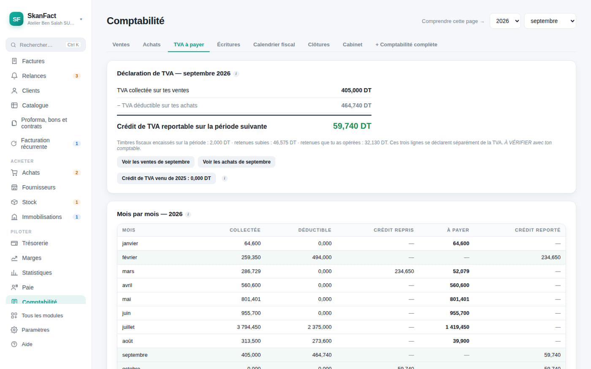
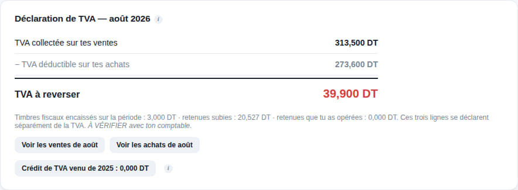

Accueil Les règles tunisiennes
Tunisie
Les règles d'ici sont déjà dedans.
Vous n'avez pas besoin de les connaître pour être en règle. L'application les applique, et vous explique chacune au moment précis où elle sert — pas dans un manuel.

Les trois règles appliquées à chaque facture
Le timbre fiscal
Ajouté à chaque facture, jamais aux devis. Et converti si la facture est en devise : un timbre fixé en dinars ne vaut pas 1 € sur une facture en euros.
Les quatre taux de TVA
Choisis ligne par ligne. Et si votre régime ne vous assujettit pas, la mention légale prend la place de la ligne de TVA, là où le client la cherche.
La retenue à la source
Calculée sur le TTC hors timbre, avec le rappel des attestations que vos clients doivent vous remettre — et qu'on oublie de réclamer.
Le millime compte. Les montants en dinars s'affichent à trois décimales, et le montant en toutes lettres suit l'usage tunisien. Ce sont des détails jusqu'au jour où une pièce est refusée pour ça.
La déclaration du mois
La TVA se prépare toute seule, report compris.
TVA collectée sur vos ventes, TVA déductible sur vos achats, et le crédit du mois précédent repris automatiquement. C'est cet enchaînement qu'une déclaration calculée mois par mois, isolément, se trompe presque toujours.

Ne plus revenir en arrière
Un mois déclaré se verrouille.
Une fois le mois clôturé, plus rien ne bouge derrière vous : changer la date d'une facture de mars ne peut plus modifier en silence une TVA déjà déposée. Et si vous devez vraiment rouvrir, l'application demande un motif — c'est la seule trace qui expliquera à votre comptable pourquoi un chiffre a changé.
La facture électronique est en cours d'intégration
La Tunisie généralise progressivement la facture électronique pour les assujettis à la TVA. Elle est en cours d'intégration dans SkanFact, par étapes, et arrivera par une mise à jour ordinaire — comprise dans votre licence, sans surcoût et sans ressaisie. Nous n'annonçons pas de date : elle dépend du calendrier de l'administration autant que du nôtre.
En attendant, vos factures portent déjà les mentions que le format structuré réclamera. Où nous en sommes, en détail →
Pour comprendre, pas pour acheter
Ces règles, expliquées en détail.
Cette page dit ce que SkanFact applique. Si vous voulez d'abord comprendre la règle elle-même — ce qu'une facture doit porter, comment se calcule la déclaration, sur quelle base se prend une retenue — les guides le disent sans parler du logiciel.
Voyez ce que ça donne sur vos factures.
Trente jours d’essai, avec le jeu d’exemple pour apprendre sans risque.
Mac et Windows · aucune carte bancaire · vos données restent chez vous